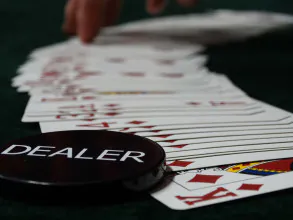
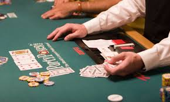
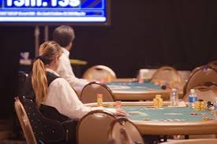

Raise Money With Our Poker Tournaments!
If you’re looking for a unique way to raise money for your organization, poker tournaments from The Party Team are the answer! Our non-profit clients are able to make great money with our system. We produce charity poker tournaments all over the region from 20 players to 400 players. We provide everything you need to ensure the event runs smoothly. Beginning with consultation on the most successful buy-in structure and an appropriate prize pool for your situation, we can then determine how many tables you might need and the appropriate space. The Party Team supplies tables, chips and cards along with our professional dealers. Our software displayed on a screen at the tournament guides our Pit Boss to make sure we crown a champion in the allotted time frame.
How Do Poker Tournaments Work?
We make it easy to set up your fundraiser. All you have to do is come up with a guest list and a buy-in. Players who buy-in will be given poker chips to start the night. As players get “knocked out” of the game, they can rebuy to get back into the game. Also, we can encourage “add-ons,” where players can buy additional chips as they play.
To ensure that the tournament doesn’t last too long, we will set up a blind structure and an itinerary of the night. The tournament consists of rounds – at the start of each new round, the blinds go up. We’ll adjust the timing and chip values based on your guest and table counts.
Our professional dealers will assist any new players, and they’ll keep track of those who get knocked out. As the number of players goes down, we’ll consolidate tables until there is only one left. Those at the final table are in for top prizes, as determined by you before the event. The entire tournament is run by a Pit Boss, who handles the logistics so you don’t have to worry about a thing.
How Much Can I Raise?
Poker tournaments are one of the best money-making opportunities. We have many clients who’ve raised over $20K in a single night. Depending on the number of guests and the buy-in costs, you can get a lot of cash for your organization. Best of all, you can combine poker tournaments with other fundraising options, such as a 50/50 raffle, casino tables, or a silent auction.

Upgrade Your Poker Tournament!
While the focus of your event is fundraising, we have plenty of other options to help your guests stay entertained! Add-ons can include:
Event DJs – Keep the music flowing all night long! We can also facilitate announcements throughout the night.
Photo Booth – Bring some memories home with our photo booth prints!
Reception Games – For those who don’t want to play (or get knocked out), we can offer giant versions of classic board games!
Cash Cube – Our blizzard of dollars is the perfect incentive for more fundraising!
Plinko or Prize Wheel – Guests can buy-in to spin or drop the Plinko! puck. Another great way to offer prizes!
Photo Booth – Bring some memories home with our photo booth prints!
Reception Games – For those who don’t want to play (or get knocked out), we can offer giant versions of classic board games!
Cash Cube – Our blizzard of dollars is the perfect incentive for more fundraising!
Plinko or Prize Wheel – Guests can buy-in to spin or drop the Plinko! puck. Another great way to offer prizes!

